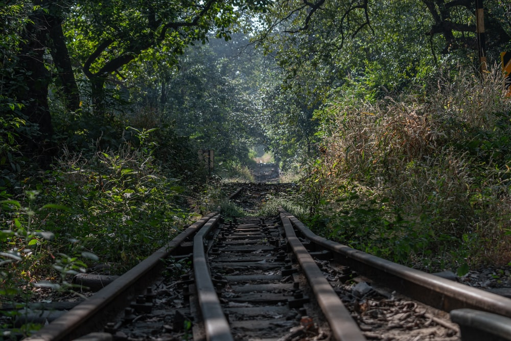
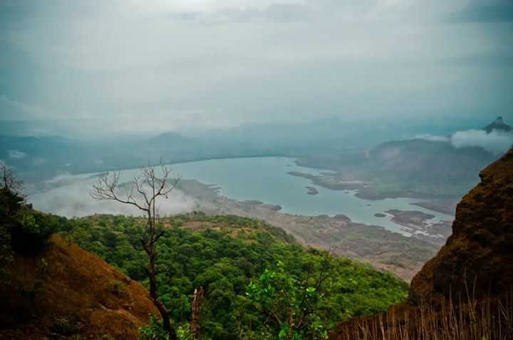
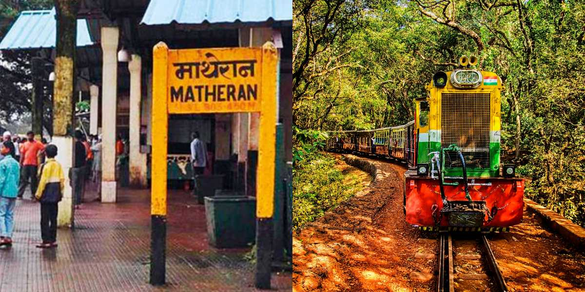

<div class="container-fluid">
    <div class="row">
        <div class="col-md-12">
            <div class="card bg-dark text-white">
                
                <div class="card-img-overlay">
                    <h5 class="card-title-main">Welcome to Matheran!</h5>
                </div>
            </div>

            <div class="p1 mt-3">
                <p>
                    At a distance of 94 km from Mumbai, 56 km from Lonavala, and 122 km from Pune, Matheran is a small
                    hill station in the Raigad district of Maharashtra.
                    Situated at an altitude of 800 m in the Western Ghats range, Matheran is one of the smallest hill
                    stations in Maharashtra. It is one of the top monsoon
                    destinations in Maharashtra and also among popular hill places to visit near Mumbai & Pune for a
                    weekend trip. It is also one of the top monsoon
                    destinations to be visited as part of Lonavala tour packages.

                    Matheran was developed by Hugh Poyntz Malet, the then district collector of Thane district in 1850
                    AD. The place was developed by Lord Elphinstone,
                    the Governor of Bombay, as a summer resort for the British. Matheran is the birthplace of famous
                    freedom fighter Veer Bhai Kotwal. The Matheran Hill
                    Railway was built in 1907 AD by Sir Adamjee Peerbhoy and covers a distance of 20 km, over large
                    swathes of forest territory.

                </p>
            </div>
            <div class="clearfix">
                
                <p>

                    The Matheran hill railway,
                    also known as Matheran Light Railway (MLR), is being considered for UNESCO World Heritage Site
                    status, and one of the must experiences to do as part of
                    Matheran tour packages.

                    Matheran, which means 'forest on the forehead', is an eco-sensitive region declared by the Ministry
                    of Environment and Forest, Government of India.
                    It is Asia's only automobile free hill station. No private automobiles are allowed into Matheran
                    town. Tourists to Matheran have to drive up to Dasturi
                    Point (2.5 km) and reach Matheran by foot or pony.

                    Matheran is famous for its 38 viewpoints, which provide a panoramic view of the peaks of Western
                    Ghats. Porcupine Point, Panorama Point, Echo Point,
                    Charlott Lake, King George Point, Louisa Point, Monkey Point, Paymaster Park, Panthers' Caves,
                    Rambaug Point, Heart Point, etc. are some important tourist
                    places in Matheran. Matheran also offers activities such as trekking, hiking, climbing, etc. The
                    ride on the toy train which connects Neral to Matheran
                    used to be quite famous but the service has now been discontinued temporarily.

                    The best time to visit Matheran is during the months of July to October, while the peak season is
                    from August to September.
                </p>
            </div>
            <div class="clearfix">
                
                <p>
                    Distance from Mumbai: 57 kms <br>

                    Timings: 24 Hrs<br>

                    Distance from Lonavala : 56 Kms <br>

                    How to reach:<br>

                    By Air: <br>
                    The nearest airport is at Mumbai(90Kms) and daily flights from other cities as well. <br><br>

                    By Rail: <br>
                    Trains arrive here from Neral(11Kms), Karjat, Pune and other cities.<br><br>

                    By Bus:<br>
                    Neral is the nearest town and is well connected by buses with Mumbai and Pune.
                    <br>

                    By Road: <br>
                    Private transport is more convenient if you would like to visit places around Matheran.<br>

                    By Walk & Trek : <br>
                    Tourists to Matheran can also drive up to Dasturi Point (8 km away from Neral) and reach Matheran by
                    foot or on a pony.<br>
                    
                </p>
            </div>
            <div class="card mt-5">
                <h5 class="card-header">Hotels within 10kms</h5>
                <div class="card-body">
                    <div class="row">
                        <div class="col-sm-4">
                            <div class="card">
                                
                                <div class="card-body">
                                    <h5 class="card-title">Usha Ascot</h5>
                                    <p class="card-text">With supporting text below as a natural lead-in to additional
                                        content.</p>
                                    <a href="#" class="btn btn-primary">Book Room</a>
                                </div>
                            </div>
                        </div>
                        <div class="col-sm-4">
                            <div class="card">
                                
                                <div class="card-body">
                                    <h5 class="card-title">Rahul Residency
                                    </h5>
                                    <p class="card-text">With supporting text below as a natural lead-in to additional
                                        content.</p>
                                    <a href="#" class="btn btn-primary">Book Room</a>
                                </div>
                            </div>
                        </div>
                        <div class="col-sm-4">
                            <div class="card">
                                
                                <div class="card-body">
                                    <h5 class="card-title">Adamo The Village
                                    </h5>
                                    <p class="card-text">With supporting text below as a natural lead-in to additional
                                        content.</p>
                                    <a href="#" class="btn btn-primary">Book Room</a>
                                </div>
                            </div>
                        </div>
                        <div class="col-sm-4">
                            <div class="card mt-3">
                                
                                <div class="card-body">
                                    <h5 class="card-title">Dune Barr House
                                    </h5>
                                    <p class="card-text">With supporting text below as a natural lead-in to additional
                                        content.</p>
                                    <a href="#" class="btn btn-primary">Book Room</a>
                                </div>
                            </div>
                        </div>
                    </div>
                </div>
            </div>
        </div>
    </div>
</div>